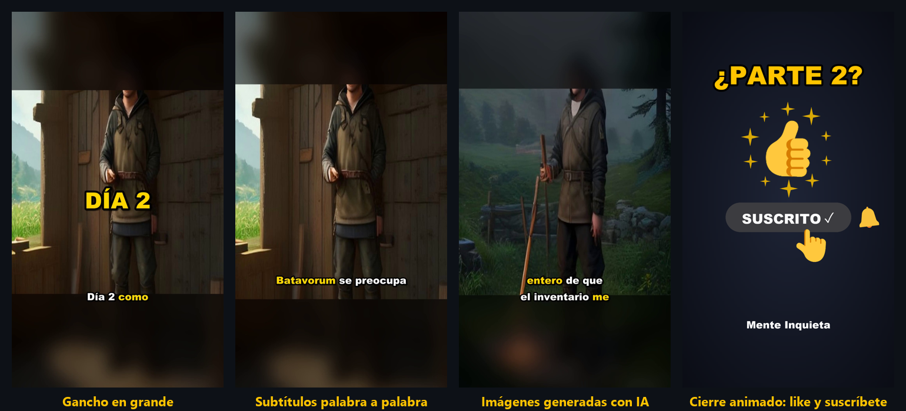

Mente Inquieta · Estudio de vídeos
Herramienta de escritorio de código abierto que convierte un tema, una fecha o una noticia en un vídeo vertical de 40-45 segundos para YouTube Shorts, con la información contrastada y las fuentes citadas.

Guion verificado
Se escribe solo con hechos de Wikipedia o de artículos de prensa, y un segundo modelo comprueba cada frase contra la fuente.
Voz, imágenes y subtítulos
Voz sintética, imágenes con licencia libre y subtítulos palabra a palabra, montados en el propio ordenador.
Publicación en YouTube
Sube y programa los vídeos en el canal de su propietario con la API oficial de YouTube, marcados como contenido sintético.
Quién la usa
Es una herramienta personal: la usa su autor para el canal de YouTube Mente Inquieta. Funciona en su ordenador; no es un servicio en línea ni tiene cuentas de usuario. El código es público y cualquiera puede instalarla para su propio canal.
Cómo usa tu cuenta de YouTube
Al conectar el canal, la herramienta pide permiso a Google para subir vídeos y miniaturas, ver el nombre del canal y gestionar la programación, la visibilidad y la descripción de los vídeos. Las credenciales se guardan solo en el ordenador donde se ejecuta. Los detalles están en la política de privacidad.